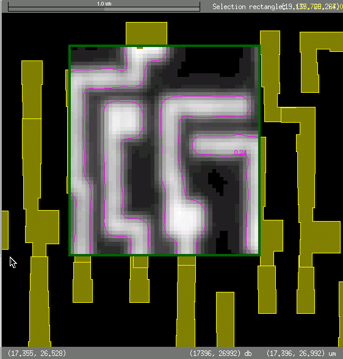
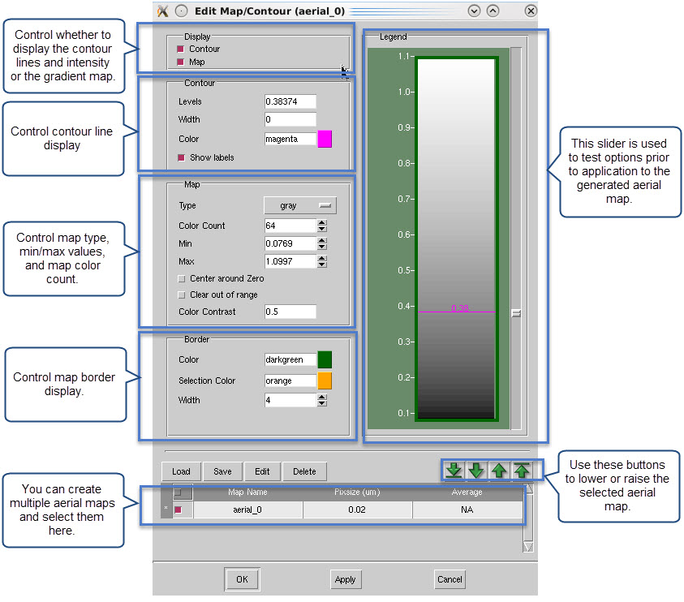

The Map tool
creates a contour map of the aerial image. This map is a representation
of the light intensity at the specified defocus start value, normalized
between 0 and 1, although it can be greater than 1. The Map tool
sums transmission values for all overlapping polygons on multiple OPC
layers.
Figure 1 shows the aerial image contour in magenta,
and the output from the Map tool in gray.
Figure 1. Aerial Image Contour Map
Procedure
- (Optional) In the Calibre
WORKbench toolbar click Select and
draw a bounding box around an area. If you do not select an area,
the entire visible part of the layout is used as the selection area.
- In the RET Flow Tool, click Options under the MAP icon.
- Specify parameters for the
simulation. There are different parameters depending on your session
type.
Table 1 lists the parameters available for Calibre
nmOPC and Calibre OPCverify.
Table 1. Map Run Options Fields (OPC Session Types)Field
|
Description
|
|---|
Map
|
Select the type of map.
Aerial: Performs a dense aerial simulation.
Resist: Performs a dense resist simulation.
Flare: Performs a flare map simulation. For more information
on generating flare maps, see the Calibre WORKbench User’s and Reference Manual.
|
Pixsize, um
|
Specify the pixel size
of the aerial map.
|
Clear previous results
|
Clears previous settings
on run.
|
Convolve Output with Gaussian
|
Use a Gaussian kernel
at the specified sigma size (default: 70 nm) on the output.
|
Table 2 lists the parameters available for Calibre
cnSRAF and Calibre mbSRAF.
Table 2. Map Run Options Fields (SRAF Session
Types)Field
|
Description
|
|---|
Map
|
Specify options to produce
a gradient map:
gradienttile
usedpixel
modgradient
sdf
aerialimage
ideal
gradientinfo
prioritylayer
tag
weightlayer
weight
Refer to the Calibre nmSRAF User’s and Reference Manual for information.
|
Clear previous results
|
Clears previous settings
on run.
|
Table 3 lists the parameters available for Calibre
OPCpro.
Table 3. Map Run Options Fields (Calibre OPCpro)Field
|
Description
|
|---|
Map
|
Select the type of map.
|
Pixsize, um
|
Specify the pixel size
of the aerial map.
|
Check Visible Layers
|
Limits the run to only
visible layers.
|
Clear previous results
|
Clears previous settings
on run.
|
Convolve Output with Gaussian
|
Use a Gaussian kernel
at the specified sigma size (default: 70 nm) on the output.
|
- Click OK once you have finished making
your selections.
The Map tool runs, and produces
aerial image output inside a green frame, as shown in Figure 1.
- Double-click anywhere inside
the green frame to raise the Edit Map/Contour dialog box.
Figure 2. Edit Map/Contour
The controls in this dialog
box set the appearance of the aerial image map (gray pixels) and
aerial image contour (magenta line). Adjusting the slider bar changes
the simulation of the aerial image contour line dynamically in the
layout view.